Examples#
Complete cases that run as they are. Each page gives the setup of a case, the commands that run it and its results. Where there is something to compare with, the results are set against theory, against other codes or against published benchmarks.
The cases are in the examples/ directory of the code, grouped by their
physics. The pages here are built from the files there, so the commands and
the numbers on them are the ones in the repository.
Basic plasma#
Waves and instabilities of a uniform, collisionless plasma, against theory.
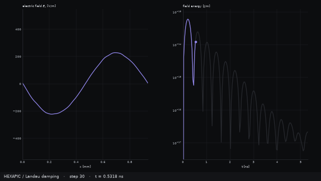
A Langmuir wave in a warm, collisionless plasma in a periodic box. Its damping rate and its frequency are compared with the root of the kinetic dispersion relation.
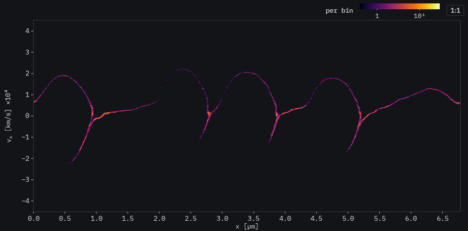
Two counter-streaming electron beams in a periodic box. The growth rate of the instability is compared with the cold-beam theory, and the field energy with XOOPIC.
Discharges#
Plasmas between electrodes.
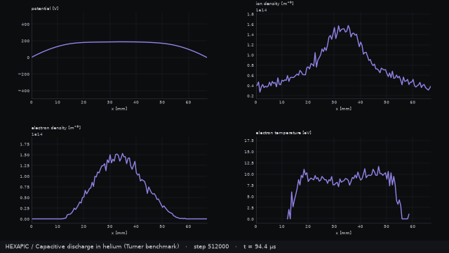
A capacitive RF discharge in helium between two plates, the benchmark of Turner et al. (2013). The time-averaged ion density is compared with the paper’s; it is 11 % too high, because HEXAPIC shares the energy of an ionisation differently.
Thrusters#
Electric propulsion: Hall thrusters and gridded ion thrusters.
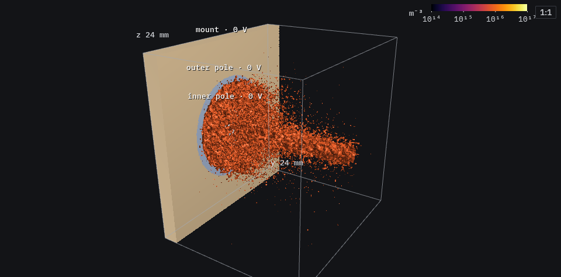
A small Hall thruster with its annular channel, the field of its magnetic poles, a central cathode and the plume in a vacuum chamber, in 3-D. The run gives the potential drop, the ion beam and the balance of the currents.
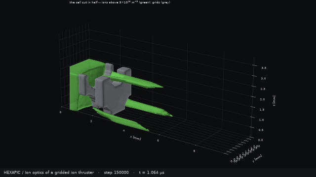
A periodic cell of the two grids of a gridded ion thruster in 3-D, with the discharge plasma behind the screen grid, two ion beamlets and their neutralization. The run gives the potential, the beam current and its perveance, the transparency of the screen grid, and the energy and divergence of the beam.
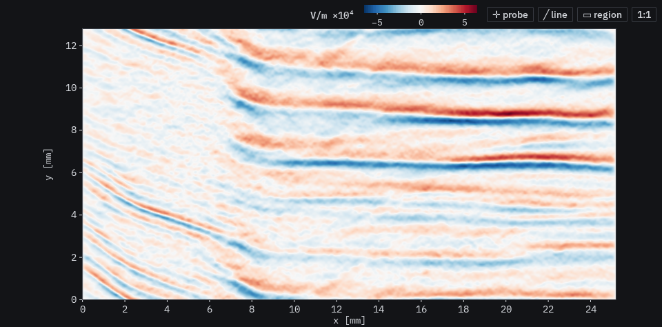
The 2-D axial-azimuthal benchmark of a Hall thruster by Charoy et al. The axial profiles and the cathode current are compared with the seven codes of the paper.
Walls#
Plasmas and beams bounded by walls: sheaths, emission, and floating and biased conductors.
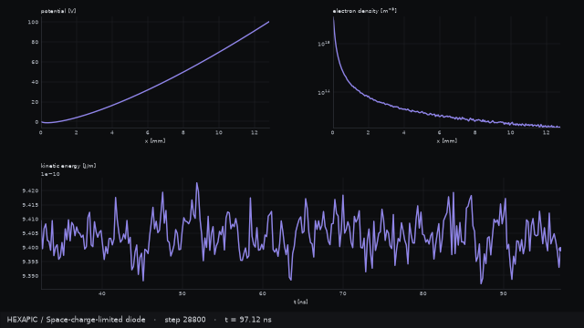
A planar vacuum diode whose cathode emits more electrons than the gap can carry. The current that reaches the anode is compared with Langmuir’s theory of the space-charge-limited diode and with the Child–Langmuir law.
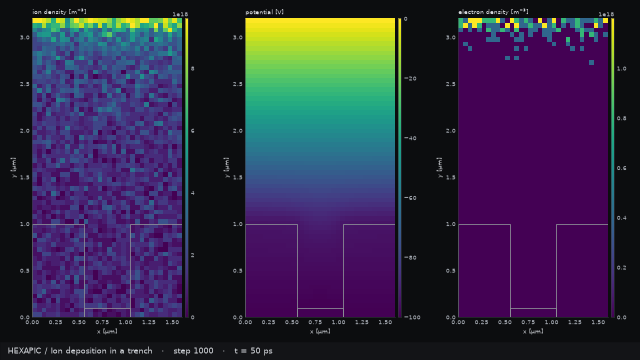
Ions fall through 100 V onto a substrate that is covered by a dielectric layer with a trench. The ion flow and the potential are compared with XOOPIC, before the layer charges.
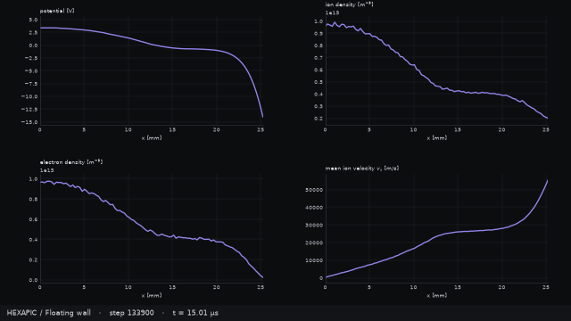
A hydrogen plasma, sustained by a source, in front of a floating wall. The potential drop of the sheath and the speed of the ions at its edge are compared with the theory of the planar collisionless sheath.
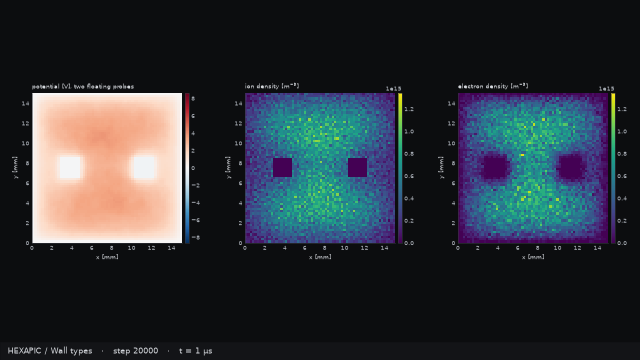
The same argon plasma in a square box with eight sets of walls and probes — grounded, open, reflective and biased walls, and biased and floating conductors inside the box.
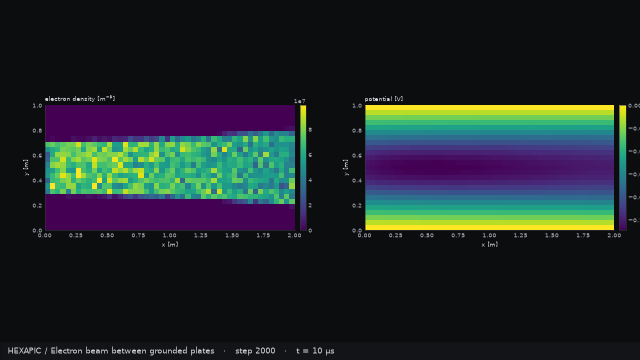
A cold electron beam crosses a box between two grounded plates and spreads by its own space charge. The steady beam is compared with XOOPIC.